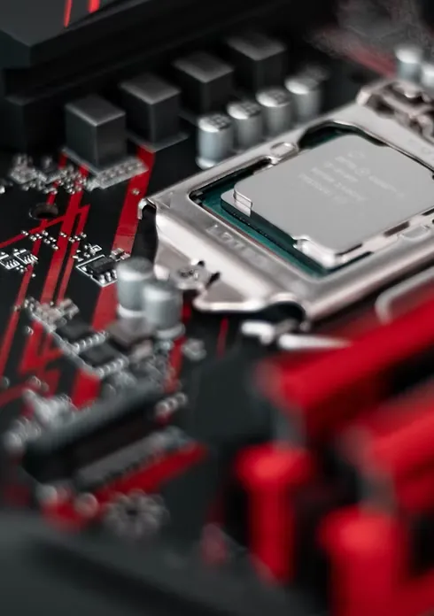

Assistência técnica especializada
Nossas soluções de TI e Informática abrem o caminho para que as empresas possam recuperar e reparar dispositivos, com profissionais capacitados e treinados, alguns serviços que podemos oferecer para você e sua empresa:
- Reparo especializado em Motherboards;
- Reparo em Desktops e Notebooks (troca de teclado, tela, bateria, componentes internos);
- Conserto de Impressoras Laser;
- Conserto de Tablets;
- Conserto de Celulares;
- Montagem e Limpeza de Computadores;
- Instalação e configuração de novos computadores;
- Instalação de acessórios e periféricos;
- Analise e Upgrade de Hardware;
- Formatação c/ Backup;
- Otimização de espaço em disco;
- Instalação de Programas;
